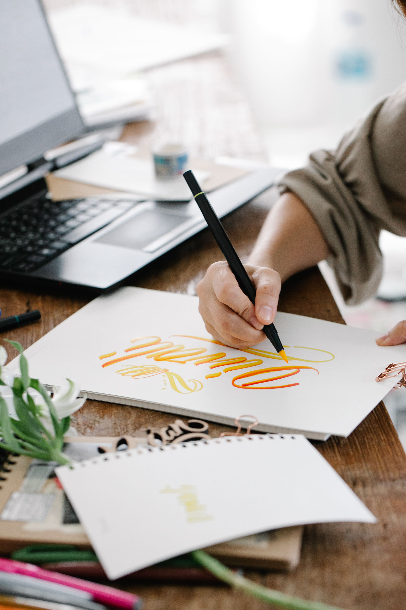
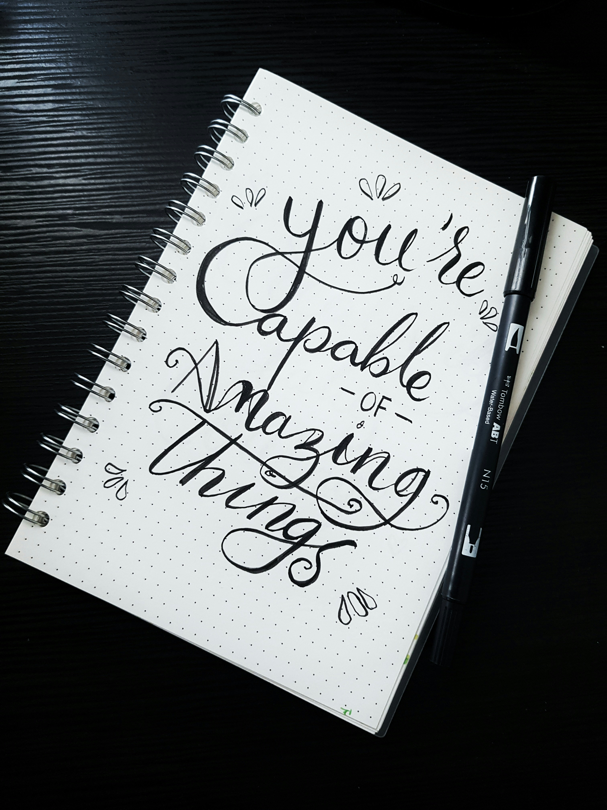

Brush Pen

Brush pen calligraphy uses a flexible, brush-like tip to create letters with varying line widths. The basic technique is simple: use light pressure for thin upstrokes and heavier pressure for thick downstrokes. This contrast between thick and thin lines is what gives brush lettering its distinctive, elegant appearance. Unlike traditional pointed-pen calligraphy, brush pen calligraphy doesn't require an ink pot or nib holder. The ink is contained inside the pen, making it portable, relatively mess-free, and easy to practice almost anywhere.
